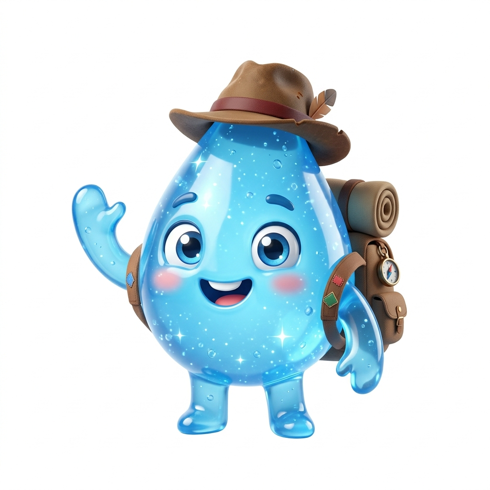
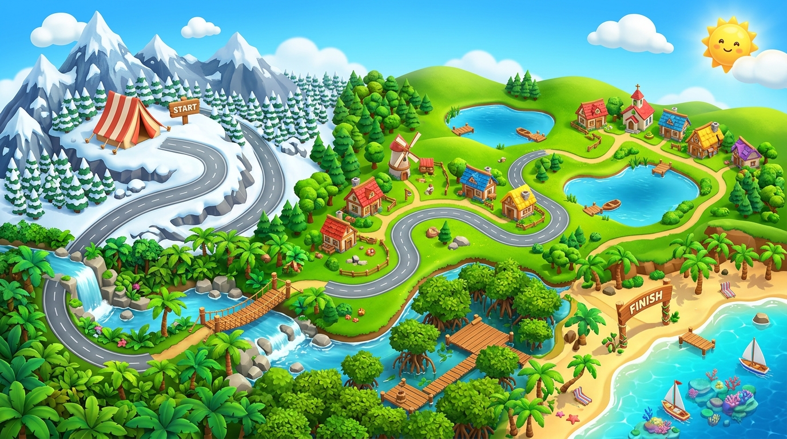

Hai Sahabat Sains! Ketikkan nama lengkapmu agar dicantumkan pada Rapor Nilai dan Lembar Rekapitulasi Jawaban kuis.
💡 Silakan isi dengan nama lengkapmu.

"Yuk Belajar Siklus Air dan Selesaikan 10 Misi Sains Bersama Tirta!"
Indikator pembelajaran & materi lengkap sebelum mengerjakan soal.
Panduan langkah demi langkah menjelajah pos & menjawab tantangan.
Cek rekor skor, lencana, dan evaluasi capaian belajarmu.
Bantu Tirta si Tetes Air menuntaskan perjalanan sains dari puncak gunung bersalju abadi hingga samudra raya! Klik pos yang menyala untuk menjawab tantangan studi kasus HOTS.

Dirancang untuk diproyeksikan di depan kelas untuk membawakan presentasi materi dan evaluasi kelompok.
Konsep Ilmiah
Hai Sahabat Sains! Ketikkan nama lengkapmu agar dicantumkan pada Rapor Nilai dan Lembar Rekapitulasi Jawaban kuis.
Panas matahari memanaskan permukaan air di lautan, danau, sungai, hingga benda-benda basah di daratan. Akibat pemanasan tersebut, air berubah wujud dari cair menjadi gas (uap air) yang ringan dan melayang naik ke atmosfer bumi.
Tumbuhan hijau menyerap air dari dalam tanah melalui perakaran. Saat cuaca panas atau terik, daun tumbuhan melepaskan uap air ke udara bebas melalui pori-pori mikroskopis di permukaan daun yang dinamakan stomata. Proses penguapan air dari jaringan tumbuhan ini dinamakan Transpirasi.
Saat uap air naik menuju lapisan atmosfer yang bersuhu lebih rendah (dingin), uap air mengalami penurunan suhu atau pendinginan sehingga memadat kembali menjadi butiran-butiran air kecil dan kristal es halus. Kumpulan titik-titik air inilah yang membentuk Awan di angkasa. Peristiwa pendinginan uap air ini juga sering kita amati saat bagian luar gelas berisi air es menjadi basah berembun.
Ketika butiran-butiran air di awan semakin padat, bertambah berat, dan udara tidak mampu lagi menahannya, air akan jatuh kembali ke permukaan bumi dalam bentuk hujan (atau kristal salju pada kawasan bersuhu beku).
Air hujan yang jatuh ke permukaan tanah akan meresap ke dalam pori-pori tanah melalui bantuan akar vegetasi tumbuhan (infiltrasi). Air yang berhasil meresap ini tersimpan di lapisan bawah tanah sebagai cadangan air tanah yang menjaga kestabilan mata air serta sumur warga.
Air hujan yang tidak sempat meresap ke dalam tanah akan mengalir melintasi permukaan tanah menuruni lereng menuju parit, sungai, waduk, hingga kembali ke samudra raya untuk melanjutkan siklus hidrologi.
Penebangan pohon secara liar di bukit atau hutan menyebabkan hilangnya vegetasi dan jaringan akar penyerap air. Akibatnya, laju penyerapan air hujan (infiltrasi) berkurang secara signifikan. Kondisi ini memicu banjir limpasan permukaan serta pengikisan tanah saat musim hujan, dan mengakibatkan penurunan cadangan air tanah sehingga sumur-sumur mengalami kekeringan pada musim kemarau.
Melapisi seluruh permukaan pekarangan atau kawasan permukiman dengan semen padat tanpa menyisakan ruang tanah terbuka akan menutup pori-pori tanah dan menghalangi proses infiltrasi air hujan. Akibatnya, air hujan tidak dapat meresap untuk mengisi cadangan air tanah alami dan beralih menjadi genangan air atau banjir limpasan permukaan.
Pembuangan sampah padat seperti plastik serta limbah cair rumah tangga atau industri ke saluran perairan menyebabkan penurunan kualitas air sungai dan air tanah di sekitarnya. Air menjadi keruh, berbau tidak sedap, mengandung zat berbahaya, serta berpotensi menyumbat saluran drainase alami.
Kebiasaan membiarkan keran air mengalir terus-menerus tanpa dimanfaatkan berdampak langsung pada berkurangnya ketersediaan pasokan air bersih di tempat penampungan serta dapat memicu kelangkaan air bersih bagi orang lain.
Melakukan penanaman kembali pohon di area lereng bukit atau lahan yang telah gundul (reboisasi). Sistem perakaran pohon yang kuat berfungsi mencengkeram struktur tanah, mencegah erosi dan longsor, serta memaksimalkan penyerapan air hujan agar tersimpan menjadi cadangan air tanah yang lestari.
Membuat lubang silindris vertikal ke dalam tanah yang diisi bahan organik (biopori) atau sumur resapan pada pekarangan. Teknologi konservasi air sederhana ini berfungsi membantu mempercepat resapan air hujan ke lapisan akuifer tanah serta mengurangi debit genangan banjir limpasan.
Menerapkan sistem pengolahan limbah sederhana (seperti bak penyaring limbah atau instalasi pengolahan air limbah) sebelum air buangan dibuang ke aliran sungai, sehingga ekosistem perairan tetap terlindungi dan baku mutu air bersih tetap terjaga.
Menumbuhkan budaya hemat air melalui media edukasi kreatif (seperti poster informasi dan ajakan bijak menggunakan air di dekat fasilitas sanitasi), serta membentuk kelompok piket atau pengawasan mandiri untuk memastikan keran air selalu tertutup rapat setelah digunakan.
Kelas V SD • Media Interaktif Siklus Air SD